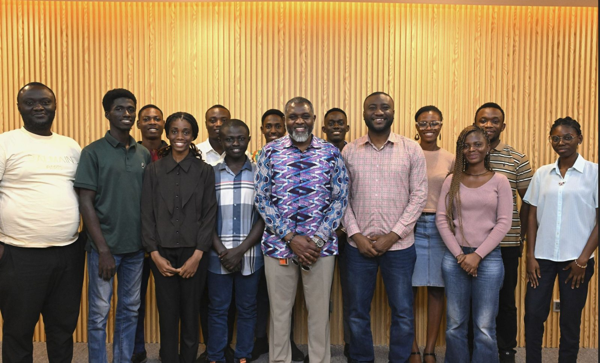
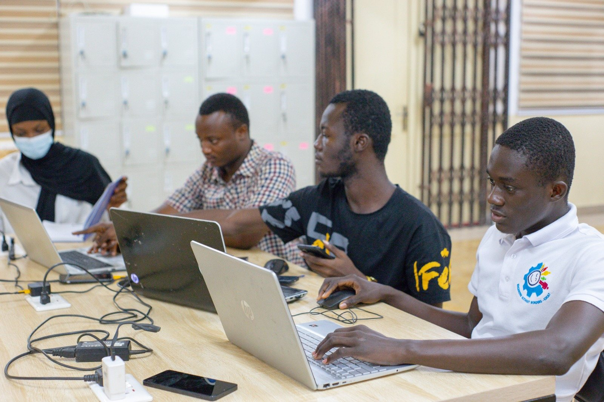
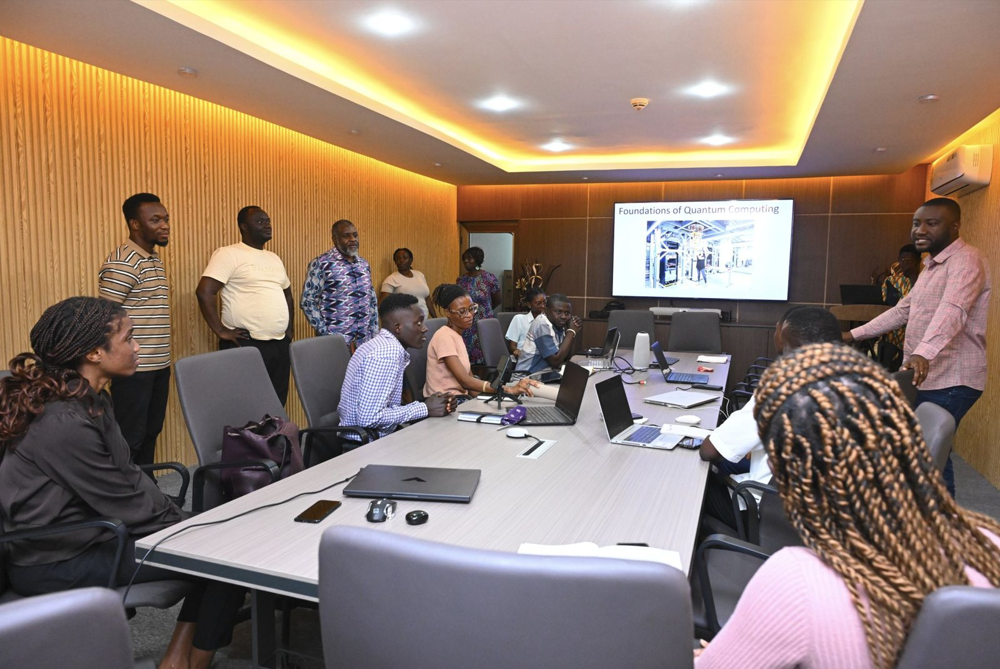
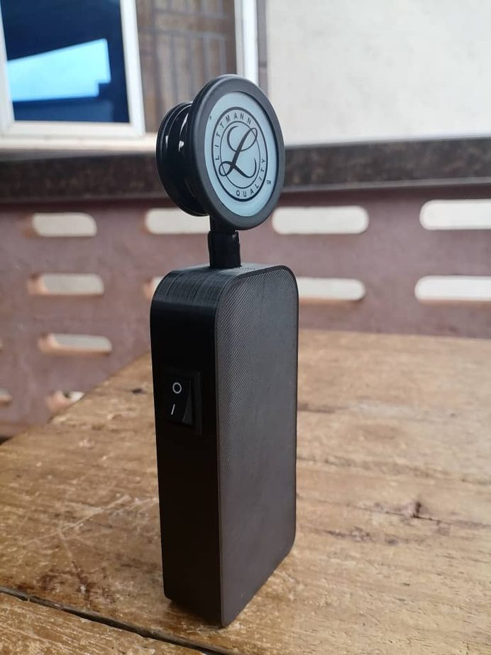

Research
Research
My core focus: AI in tissue engineering and computational medicine, with a thread in AI for medical imaging.
AI in Tissue Engineering
Core focus · Ongoing
Applying machine learning to tissue engineering — my primary research direction, approached computationally.
Computational Medicine
Core focus · Ongoing
AI for computational drug discovery, toxicity prediction, and biomedical data analysis.
AI in Medical Imaging
Active thread · Ongoing
Deep learning for medical image analysis and segmentation under realistic clinical conditions.
Systems Pharmacology
Ongoing
A platform integrating molecular, pharmacological, and traditional-medicine data for drug-discovery research.
Several projects are active and unpublished, so they are shown here as themes only. Details available on request, where appropriate.
Where I work

Global Health AI & Compute Lab
I research and build with the GHAIC Lab at the Kumasi Centre for Collaborative Research, working with a multidisciplinary team applying AI and large language models to challenges in drug discovery and global health.


Completed work

Wireless Digital Stethoscope
A low-cost, portable wireless digital stethoscope for clinical use in Ghana — designed to improve early detection and remote monitoring of cardiovascular conditions in resource-limited settings.